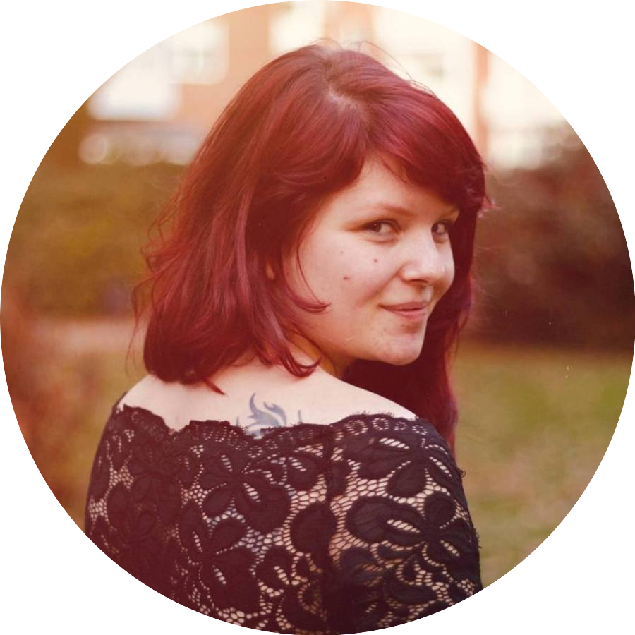

|  | Tanya Dørr HolstGraduate AP degree in computer science. I am a female Danish graduate in AP Computer Science, specialized in programming and designing video games. I have multiple qualities besides games, these include building a machine learning AI, and routing messages between servers using RabbitMQ. For the duration of my education, I have been working in C# .Net, programming games in both Unity game engine and by using the visual programming system in Unreal game engine. Contact me |
| Year | School and Education | What did I learn there |
| 2013/2014 | Music School of Production - Aarhus Produktionsskole | Since I was not yet ready to start studies at Langkaer, I chose to spend a year working on the school of production where our product was music concerts and theater productions. This took me all over the country and taught me to stay committed to a project. |
| 2014/2016 | General Upper Secondary School - Langkaer Gymnasium, Aarhus | Working with music next to the standard education, I was focused on developing my overall qualifications and strived to be active and competent in class. |
| 2016/2019 | AP Degree in Computer Science at Dania Games | Getting the degree, focused on learning to programs and games in C# .Net. Aside from this, also spending some time, learning about RabbitMQ and Machine Learning, whilst learning to implement these in projects as well. |
| Languages | Frameworks | ||||||||||||
|
|